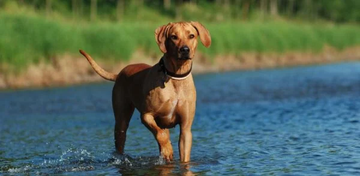

My four hours best nanny is a place where you children can learn and play. We are very experinced in taking care of children.
So when you palaning to have som free time with your friends, partner or shopping,entertian by yourself, we are going to help you with that.
Just leave your child or children for 4 hours.
In this four percious hours your children will learn, play and entertian more. As well as for you, you will enjoy your free time.
We have alot av diffrent activtes which a child loves and likes.


